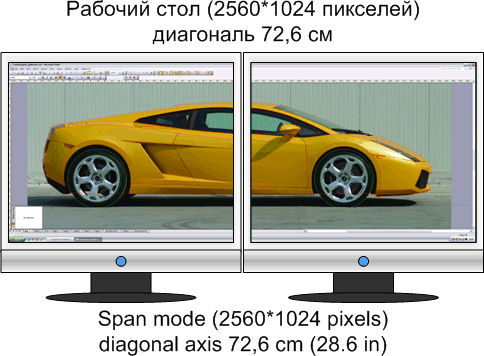
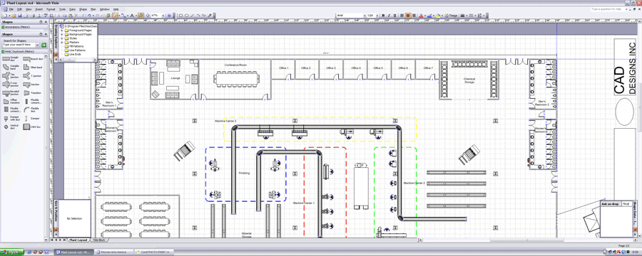
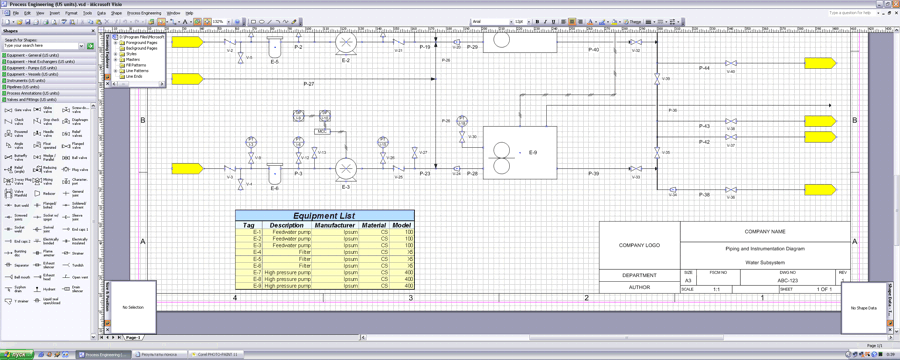
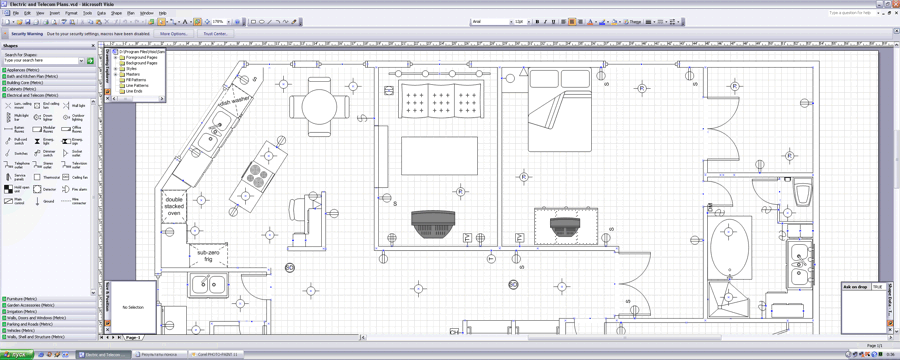
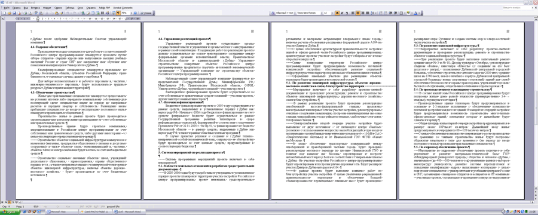
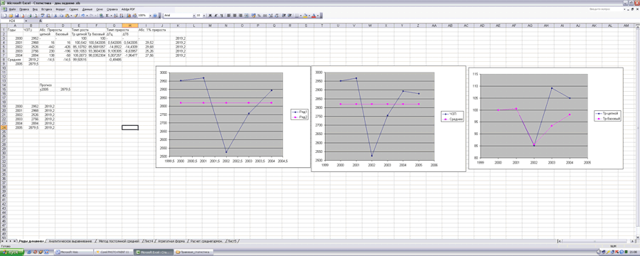

Visio on two monitors.
 Still for a long time, in 2000, apparently, I needed to adjust a computer at which as a videocard it was used Matrox G450 DualHead. It is a videocard for work on two monitors. Certainly, the second monitor has quickly been found and the opportunity to work then still in Visio 2000 on two 19 " monitors was presented me. The general working area with a diagonal in meter has left indelible impression.
Still for a long time, in 2000, apparently, I needed to adjust a computer at which as a videocard it was used Matrox G450 DualHead. It is a videocard for work on two monitors. Certainly, the second monitor has quickly been found and the opportunity to work then still in Visio 2000 on two 19 " monitors was presented me. The general working area with a diagonal in meter has left indelible impression.
But progress is not necessary on a place and already now two-monitor workstations are not amazing, moreover, now almost all videocards have two outputs. Such configurations have a number of merits and demerits. During experiment we shall consider the most typical.
So, 2 volunteers, agreed to give me monitors for a while are found. We connect and is included. As at me a videocard on chip NVidia start of the simple master and having answered some questions, I have received a desktop in SPAN a mode with the sanction 2560*1024. I think, on any other videocard this process is not less simple. And at once has come up the first lack. The driver cannot work in such configuration with two color structures for each monitor separately. Also, that monitors at me were different manufacturers I had to calibrate colors long. And in a consequence I have simply adjusted the secondary monitor, and then a structure have adjusted the primary monitor under secondary. It was the most simple variant.

The second lack the black strip from fields of 2 monitors in the middle of the screen is considered. But quickly enough you adapt and soon it is already almost imperceptible.
The third lack is that though the majority of programs correctly works with two monitors, programs which function within the limits of only one monitor come across.
The biggest advantage it, undoubtedly, simply huge working space with a diagonal of the screen in 72,6 sm (2x 17 " the LCD-monitor). As already it has been told earlier, my experience of start Visio 2000 was successful. As it has appeared, this tendency was kept. Both Visio 2002, and Visio 2003 and Visio 12 beta completely function in the given configuration. On two monitors in Visio it is very convenient to work with greater landscape formats.



It is possible to open on one window of cliches both at the left, and on the right, and to continue to work comfortably. It is a lot of place. Panels of tools are located along all screen, and it releases even more working space. As a whole, in one line 4-5 panels of tools find room. I.e. in an ideal it is possible to generate such panel of tools when it will not be necessary to choose something in the menu. By the way, enough an interesting opportunity is the vertical arrangement of the basic menu.
As to other programs from Office'a they too completely function in the given mode. In Word'a, for example, it is possible to work comfortably at once with 4-iy sheets A4.

Example of work in Excel.

Articles page
Previous article
Author: Nichkov Alexey (a.k.a. Digitall)